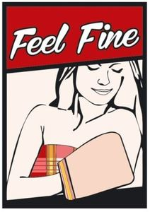

Trade Mark Journal No.2025/013 28 March 2025
WO0000001843078 (35)
Office of origin: Turkey
Date of International Registration:3 October 2024
Date of designation in the UK:
3 October 2024

The mark contains the colours red and white.
- Class 35
- Advertising, marketing and public relations; organization of exhibitions and trade fairs for commercial or advertising purposes; development of advertising concepts; provision of an online marketplace for buyers and sellers of goods and services; office functions; secretarial services; arranging newspaper subscriptions for others; compilation of statistics; rental of office machines; systemization of information into computer databases; telephone answering for unavailable subscribers; business management, business administration and business consultancy; accounting; commercial consultancy services; personnel recruitment, personnel placement, employment agencies, import-export agencies; temporary personnel placement services; auctioneering; the bringing together, for the benefit of others, of a variety of goods, namely, bleaching and cleaning preparations, detergents other than for use in manufacturing operations and for medical purposes, laundry bleach, fabric softeners for laundry use, stain removers, dishwasher detergents, perfumery non-medicated cosmetics fragrances deodorants for personal use and animals, soaps, dental care preparations: dentifrices, denture polishes, tooth whitening preparations, mouth washes, not for medical purposes, abrasive preparations emery cloth sandpaper pumice stone abrasive pastes, polishing preparations for leather, vinyl, metal and wood, polishes and creams for leather, vinyl, metal and wood, wax for polishing, pharmaceutical and veterinary preparations for medical purposes, chemical preparations for medical and veterinary purposes, chemical reagents for pharmaceutical and veterinary purposes medicated cosmetics, dietary supplements for pharmaceutical and veterinary purposes dietary supplements nutritional supplements medical preparations for slimming purposes food for babies herbs and herbal beverages adapted for medicinal purposes, dental preparations and articles: teeth filling material, dental impression material, dental adhesives and material for repairing teeth, sanitary preparations for medical use hygienic pads_ hygienic tampons plasters materials for dressings, diapers made of paper and textiles for babies, adults and pets, preparations for destroying vermin, herbicides, fungicides, preparations for destroying rodents, deodorants, other than for human beings or for animals air purifying preparations, air deodorising preparations, disinfectants antiseptics detergents for medical purposes, medicated soaps disinfectant soaps, antibacterial hand lotions, ores of non-precious metal, common metals and their alloys and semi-finished products made of these materials_ irons for construction, mats and stirrups of common metals for buildings common metals in the form of plate, billet, stick, profile, sheet and sheeting, goods and materials of common metal used for storage, wrapping, packaging and sheltering purposes, containers of metal (storage, transport), buildings of metal, frames of metal for building, poles of metal for building, metal boxes, packaging containers of metal, aluminium foil, fences made of metal, guard barriers of metal, metal tubes, storage containers of metal, metal containers for the transportation of goods, ladders of metal, goods of common metal for filtering and sifting purposes, doors, windows, shutters, jalousies and their cases and fittings of metal, non-electric cables and wires of metal, ironmongery, small hardware of metal, screws of metal, nails, bolts of metal nuts of metal, pegs of metal flakes of metal pitons of metal metal chains, furniture casters of metal, fittings of metal for furniture industrial metal wheels, door handles of metal, window handles of metal hinges of metal metal latches metal locks, metal keys for locks, metal rings, metal pulleys, ventilation ducts, vents, vent covers, pipes, chimney caps, manhole covers, grilles of metal for ventilation, heating, sewage, telephone, underground electricity and air conditioning installations, metal panels or boards (non-luminous and non-mechanical) used for signalling, route showing, publicity purposes, signboards of metal, advertisement columns of metal, signaling panels of metal, non-luminous and non-mechanical traffic signs of metal, pipes of metal for transportation of liquids and gas, drilling pipes of metal and their metal fittings, valves of metal, couplings of metal for pipes, elbows of metal for pipes, clips of metal for pipes, connectors of metal for pipes, safes (strong boxes) of metal, metal railway materials, metal rails, metal railway ties, railway switches, bollards of metal, floating docks of metal, mooring buoys of metal, anchors, metal moulds for casting, other than machine parts, works of art made of common metals or their alloys, trophies of common metal, metal closures, bottle caps of metal, metal poles, metal pillars, scaffoling of metal, metal stakes, metal towers, metal pallets and metal ropes for lifting, loading and transportation purposes, metal hangers, ties, straps, tapes and bands used for load-lifting and load-carrying, wheel chocks made primarily of metal, metal profile laths for vehicles for the purposes of decoration, machines, machine tools and industrial robots for processing and shaping wood, metals, glass, plastics and minerals, 3d printers, construction machines and robotic mechanisms (machines) for use in construction: bulldozers, diggers (machines), excavators, road construction and road paving machines, drilling machines, rock drilling machines, road sweeping machines, lifting, loading and transmission machines and robotic mechanisms (machines) for lifting, loading and transmission purposes: elevators, escalators and cranes, machines and robotic mechanisms (machines) for use in agriculture and animal breeding, machines and robotic mechanisms (machines) for processing cereals, fruits, vegetables and food, machines for preparing and processing beverages, engines and motors, other than for land vehicles, parts and fittings therefor: hydraulic and pneumatic controls for engines and motors, brakes other than for vehicles, brake linings for engines, crankshafts, gearboxes, other than for land vehicles, gearboxes, cylinders for engines, pistons for engines, turbines, not for land vehicles, filters for engines and motors, oil, air and fuel filters for land vehicle engines, exhausts for land vehicle engines, exhaust manifolds for land vehicle engines, engine cylinders for land vehicles, engine cylinder heads for land vehicles, pistons for land vehicle engines, carburetors for land vehicles, fuel conversion apparatus for land vehicle engines, injectors for land vehicle engines, fuel economisers for land vehicle engines, pumps for land vehicle engines, valves for land vehicle engines, starter motors for land vehicles, dynamos for land vehicle engines, sparking plugs for land vehicle engines, bearings (parts of machines), roller or ball bearings, machines for mounting and detaching tires, alternators, current generators, electric generators, current generators operated with solar energy, painting machines, automatic spray guns for paint, electric, hydraulic and pneumatic punching machines and guns, electric adhesive tape dispensers (machines), electric guns for compressed gas or liquid spraying machines, electric hand drills, electric hand saws, electric jigsaw machines, spiral machines, compressed air machines, compressors (machines), vehicle washing installations, robotic mechanisms (machines) with the abovementioned functions, electric and gas-operated welding apparatus, electric arc welding apparatus, electric soldering apparatus, electric arc cutting apparatus, electrodes for welding machines, industrial robots (machines) with the abovementioned functions, printing machines, packaging machines, filling, plugging and sealing machines, labellers (machines), sorting machines, industrial robots (machines) with the abovementioned functions, electric packing machines for plugging and sealing of plastics, machines for textile processing, sewing machines, industrial robots (machines) with the abovementioned functions, pumps other than parts of machines or engines, fuel dispensing pumps for service stations, self-regulating fuel pumps, electric kitchen machines for chopping, grinding, crushing, mixing and mincing foodstuff, washing machines, laundry washing machines, dishwashers, spin driers (not heated), electric cleaning machines for cleaning floors, carpets or floorings, vacuum cleaners and parts thereof, automatic vending machines, galvanizing and electroplating machines, electric door openers and closers, gaskets for engines and motors, furniture, made of any kind of material, mattresses, pillows, air mattresses and cushions, not for medical purposes, water beds, mirrors, beehives, artificial honeycombs and sections of wood for honeycombs, bouncing chairs for babies, playpens for babies, cradles, infant walkers, display boards, frames for pictures and paintings, identification plates, identification tags, nameplates, identification labels made of wood or synthetic materials, packaging containers of wood or plastics, casks for use in transportation or storage, barrels, storage drums, tanks, boxes, storage containers, transportation containers, chests, loading pallets and closures for the aforementioned goods, of wood or plastics, small hardware goods of wood or synthetic materials, furniture fittings, of wood or synthetic materials, opening and closing mechanisms of wood or synthetic materials, ornaments and decorative goods of wood, cork, reed, cane, wicker, horn, bone, ivory, whalebone, shell, amber, mother-of-pearl, meerschaum, beeswax, plastic or plaster namely figurines, holiday ornaments for walls, sculptures, trophies, baskets, fishing baskets, kennels, nesting boxes and beds for household pets, portable ladders and mobile boarding stairs of wood or synthetic materials, bamboo curtains, roller indoor blinds [for interiors], slatted indoor blinds, strip curtains, bead curtains for decoration, curtain hooks, curtain rings, curtain tie-backs, curtain rods, non-metal wheel chocks, hand-operated non-electric cleaning instruments and appliances, brushes, other than paintbrushes, steel chips for cleaning, sponges for cleaning, steel wool for cleaning, cloths of textile for cleaning, gloves for dishwashing, non-electric polishing machines for household purposes, brooms for carpets, mops, toothbrushes, electric toothbrushes, dental floss, shaving brushes, hair brushes, combs, non-electric household or kitchen utensils, other than forks, knives, spoons], services [dishes], pots and pans, bottle openers, flower pots, drinking straws, non-electric cooking utensils, ironing boards and shaped covers therefor, drying racks for washing, clothes drying hangers, cages for household pets, indoor aquariums, vivariums and indoor terrariums for animals and plant cultivation, ornaments and decorative goods of glass, porcelain, earthenware or clay namely statues, figurines, vases and trophies, mouse traps, insect traps, electric devices for attracting and killing flies and insects, fly catchers, fly swatters, perfume burners, perfume sprayers, perfume vaporizers, electric or non-electric make-up removing appliances, powder puffs, toilet cases, nozzles for sprinkler hose, nozzles for watering cans, watering devices, garden watering cans, unworked or semi-worked glass, except building glass, mosaics of glass and powdered glass for decoration, except for building, glass wool other than for insulation or textile use, woven or non-woven textile fabrics, textile goods for household use, curtains, bed covers, sheets (textile), pillowcases, blankets, quilts, towels, flags, pennants, labels of textile, swaddling blankets, sleeping bags for camping, clothing, including underwear and outerclothing, other than special purpose protective clothing, socks, mufflers [clothing], shawls, bandanas, scarves, belts [clothing], footwear, shoes, slippers, sandals, headgear, hats, caps with visors, berets, caps [headwear], skull caps, enabling customers to conveniently view and purchase those goods, such services may be provided by retail stores, wholesale outlets, by means of electronic media or through mail order catalogues.
BİZOYA İÇ VE DIŞ TİCARET LİMİTED ŞİRKETİ
Representative: İSTEK PATENT VE DANIŞMANLIK HİZMETLERİ LİMİTED ŞİRKETİ, Kozyataği Mah. Değirmen Sk.,, Ar Plaza D Blok K:4 No. 13/2, Kadiköy / İstanbul, TURKEY